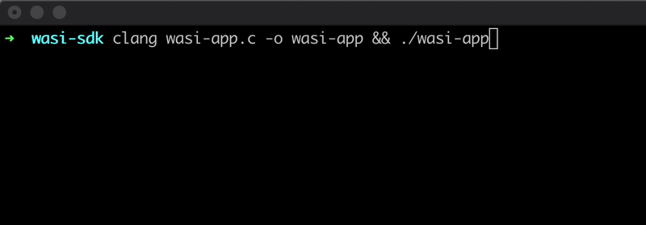
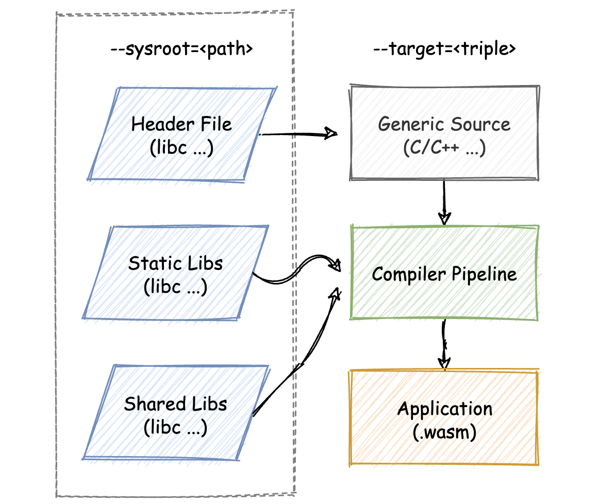
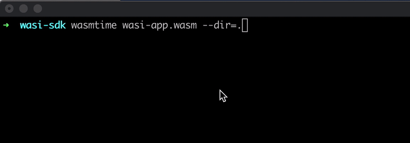

- 00 开篇词 我们为什么要了解 WebAssembly？.md.html
- 01 基础篇：学习此课程你需要了解哪些基础知识？.md.html
- 02 历史篇：为什么会有 WebAssembly 这样一门技术？.md.html
- 03 WebAssembly 是一门新的编程语言吗？.md.html
- 04 WebAssembly 模块的基本组成结构到底有多简单？.md.html
- 05 二进制编码：WebAssembly 微观世界的基本数据规则是什么？.md.html
- 06 WAT：如何让一个 WebAssembly 二进制模块的内容易于解读？.md.html
- 07 WASI：你听说过 WebAssembly 操作系统接口吗？.md.html
- 08 API：在 WebAssembly MVP 标准下你能做到哪些事？.md.html
- 09 WebAssembly 能够为 Web 前端框架赋能吗？.md.html
- 10 有哪些已经投入生产的 WebAssembly 真实案例？.md.html
- 11 WebAssembly 在物联网、多媒体与云技术方面有哪些创新实践？.md.html
- 12 有哪些优秀的 WebAssembly 编译器与运行时？.md.html
- 13 LLVM：如何将自定义的语言编译到 WebAssembly？.md.html
- 14 有哪些正在行进中的 WebAssembly Post-MVP 提案？.md.html
- 15 如何实现一个 WebAssembly 在线多媒体处理应用（一）？.md.html
- 16 如何实现一个 WebAssembly 在线多媒体处理应用（二）？.md.html
- 17 如何实现一个 WebAssembly 在线多媒体处理应用（三）？.md.html
- 18 如何进行 Wasm 应用的调试与分析？.md.html
- 19 如何应用 WASI 及其相关生态？.md.html
- 20 总结与答疑.md.html
- 结束语 WebAssembly，未来已来.md.html
- 捐赠
19 如何应用 WASI 及其相关生态？
你好，我是于航。
作为“实践篇”的最后一课，今天我们来一起看看“如何从零构建一个 WASI 应用？”。在实践篇的前三节课里，我花了大量的篇幅来介绍如何基于 Emscripten ，去构建一个可以运行在 Web 浏览器中的 Wasm 应用。而基于 WASI 构建的 Wasm 应用将会被运行在浏览器之外的 Native 环境中，因此其构建和使用方式与基于 Emscripten 的 Wasm 应用有所不同。
但也正如我们在第 07 讲中介绍的那样，WASI 本身作为一种抽象的操作系统调用接口，对上层的应用开发者来说，没有较为直接的影响。
甚至对于同样的一段可以被编译为本地可执行应用程序的代码来说，我们只需要适当调整编译器的相关设置，就可以在不做任何代码更改的情况下，编译出所对应的 WASI 版本代码（也就是 Wasm 字节码）。然后再配合相应的 Wasm 虚拟机，我们就能够以“另一种方式”来执行这些代码了。
总的来说你可以看到，相较于传统的可执行文件，WASI 应用程序的整个“生命周期”基本上只有“编译”与“运行”两个阶段会有所不同。在接下来的内容中，我们将以一段 C/C++ 代码入手，来从编码、编译，再到运行，一步步带你完成这个 WASI 应用。
编码
首先，我们先来编写应用对应的 C/C++ 代码，这部分内容如下所示。
// wasi-app.c
#include <stdio.h>
#define BUF_SIZE 1024
int main(int argc, char **argv) {
size_t counter = 0;
char buf[BUF_SIZE];
int c;
while ((c = getchar()) != '\n') {
buf[counter++] = c;
}
if (counter > 0) {
printf("The input content is: %s\n", buf);
// write content to local file.
FILE* fd;
if ((fd = fopen("wasi-static.txt", "w"))) {
fwrite(buf, sizeof(char), counter, fd);
} else {
perror("Open static file failed!");
}
}
return 0;
}
这段代码所对应的功能是这样的：程序在实际运行时，会首先要求用户输入一些随机的文本字符，而当用户输入“回车键（\n）”后，之前输入的所有内容都将会被回显到命令行中。
除此之外，这些输入的文本字符也会被同时保存到当前目录下名为 “wasi-static.txt” 的文本文件中。而无论在程序运行时该文本文件是否存在，应用都将会重新创建或清空该文件，并写入新的内容。
这里为了完成上面的功能，在代码中我们使用了诸如 “fopen” 与 “fwrite” 等用于操作系统文件资源的 C 标准库函数。这些函数在被编译至 Native 可执行文件后，会通过间接调用“操作系统调用”的方式，来实现与文件等系统资源的实际交互过程。
Native 可执行程序
接下来，我们尝试将上述这段代码编译为本地可执行文件，并尝试运行这个程序以观察应用的实际运行效果。对应的编译和运行命令如下所示：
clang wasi-app.c -o wasi-app && ./wasi-app
在上述命令执行完毕后，我们可以按照下图所示的方式来与这个应用程序进行交互。

可以看到，应用的实际运行效果与我们之前所描述的保持一致。
接下来，我们将尝试把上面这段 C/C++ 代码编译成对应的 Wasm 字节码，并使用 Wasmtime 来执行它。而为了完成这个工作，我们首先需要了解整个编译链路的基本情况。
交叉编译
我们曾在第 13 讲中介绍过，LLVM 工具链已经具备可以将 LLVM-IR 编译为 Wasm 字节码的编译器后端能力。因此，基于 LLVM 构建的编译器 Clang，便也可以同样享受这个能力。
那么按照这样的思路，我们是否可以直接使用 Clang 来编译 C/C++ 代码到 Wasm 字节码呢？事实上确实是可以的。而这里我们需要做的就是借助 Clang 来进行针对 WASI 的“交叉编译”。
那为什么说是“交叉编译（Cross-Compilation）”呢？你可以按照这样的方式来简单理解：其实我们说的无论是 Wasm32 还是 Wasm64，它们都是指一种“指令集架构”，也就是 “(V)ISA”。而 ISA 本身只是规定了与指令相关的一些信息，比如：有哪些指令？指令的用法和作用？以及这些指令对应的 OpCode 编码是什么？等等。
但回到 “WASI”。它是一种基于 Wasm 指令集的“平台类型”。所谓“平台”，你可以用诸如 Linux、Windows 等各种不同的操作系统类型来进行类比。WASI 指定了一种自己独有的操作系统接口使用方式，那就如同 Linux 与 Windows 都有其各自不同的操作系统调用号一样。这将会影响着我们的 C/C++ 代码应该如何与对应平台的不同操作系统调用进行编译整合。
当然，这种类比方式并不严谨，但对于帮助我们理解上面的问题是完全足够的。
基于 Clang 的编译管道
既然我们想要借助 Clang 来进行针对 WASI 的交叉编译，那么在开始真正动手编译之前，我们需要准备哪些其他必要的组件呢？通常在 Clang 中，一个大致的交叉编译流程如下图所示。

可以看到，其实同正常的编译流程十分类似，输入到编译器的 C/C++ 源代码会通过适用于对应目标平台的头文件，来引用诸如 “C 标准库” 中的函数。
而在编译链路中，应用本身对应的对象文件将会与标准库对应的动态或静态库文件再进行链接，以提取所引用函数的实际定义部分。最后，再根据所指定的平台类型，将编译输出的内容转换为对应的平台代码格式。
在上面的流程中，输入到编译链路的源代码，以及针对 WASI 平台适用的标准库头文件、静态库以及动态库则将需要由我们自行提供。在 Clang 中，我们将通过 “–sysroot” 参数来指定这些标准库相关文件的所在位置；参数 “–target” 则负责指定交叉编译的目标平台。
接下来，我们将通过 WASI SDK 的帮助来简化上述流程。
WASI SDK
顾名思义，“WASI SDK” 是一套能够帮助我们简化 WASI 交叉编译的“开发工具集”。但与其说它是开发工具集，不如说它为我们整合了用于支持 WASI 交叉编译的一切文件和工具资源，其中包括：基于 “wasi-libc” 编译构建的适用于 WASI 平台的 C 标准库、可用于支持 WASI 交叉编译的最新版 Clang 编译器，以及其他的相关必要配置信息等等。
它的安装过程十分简单，只需要将其下载到本地，然后解压缩即可，详情你可以参考这里。假设此时我们已经将 WASI SDK 下载到当前目录，并得到了解压缩后的文件夹（wasi-sdk-11.0）。
下面我们将正式开始进入编译流程。首先我们来看看对应的交叉编译命令是怎样的。
./wasi-sdk-11.0/bin/clang \
--target=wasm32-wasi \
--sysroot=./wasi-sdk-11.0/share/wasi-sysroot \
wasi-app.c -o wasi-app.wasm
你可以参考上面这行命令。同我们之前所介绍的一样，这里我们直接使用了由 WASI SDK 提供的 Clang 编译器来进行这次交叉编译。然后我们使用了 “–sysroot” 参数来指定适用于 WASI 的标准库相关文件其所在目录。这里可以看到，我们通过参数 “–target” 所指定的平台类型 “wasm32-wasi” 便是 LLVM 所支持的、针对于 WASI 的平台编译类型。
编译完成后，我们便可以得到一个 Wasm 文件 “wasi-app.wasm”。最后，我们将使用 Wasmtime 来运行这个 Wasm 模块。如果一切顺利，我们可以看到同 Native 可执行程序一样的运行结果。（关于 Wasmtime 的安装过程可以参考这里）
Wasmtime
按照正常的思路，我们可能会通过下面的方式来尝试运行这个 Wasm 文件。
wasmtime wasi-app.wasm
而当命令实际执行时，你会发现 Wasmtime 却给出了我们这样的一条错误提示：“Capabilities insufficient”，这便是 “Capability-based Security” 在 WASI 身上的体现。
Wasmtime 在实际执行 “wasi-app.wasm” 文件中的字节码时，发现这个 WASI 应用使用到了文件操作相关的操作系统接口，而对于一个普通的 WASI 应用来说，这些接口在正常情况下是无法被直接使用的。换句话说，默认情况下的 WASI 应用是不具备“文件操作”相关的 Capability 的。这些 Capability 需要我们在实际运行应用时主动“授予”给应用，方式如下所示。
wasmtime wasi-app.wasm --dir=.
这里我们在通过 Wasmtime 运行 WASI 应用时，为其指定了一个额外的 “–dir=.” 参数。通过该参数，Wasmtime 可以将其所指定的文件路径（.）“映射”到 WASI 应用中，以供其使用。
这样，我们便可以使用 Wasmtime 来成功运行这个 WASI 应用了，如下图所示。

当然，对于其他的支持 WASI 的 Wasm 运行时来说，它们也会以类似的方式来实现 Capability-based Security 这一 WASI 最为重要的安全模型。而这一模型也是 WASI+Wasm 能够在一定程度上“取代” Docker 进行应用沙盒化的基础。
总结
好了，讲到这，今天的内容也就基本结束了。最后我来给你总结一下。
在本节课中，我们主要讲解了如何从零构建一个 WASI 应用。
我们要知道的是，构建 WASI 应用的过程，其实是一个“交叉编译”的过程。我们需要在各自的宿主机器（Linux、MacOS、Windows 等等）上构建“以 Wasm 字节码为 ISA 架构，WASI 作为平台类型”的这样一种应用。而应用的实际运行将交由支持 WASI 的 Wasm 运行时来负责。
目前，我们可以直接借助 “WASI SDK” 来简化整个交叉编译的实施难度。WASI SDK 为我们整合了在编译 WASI 应用时需要使用的所有工具与组件。其中包含有可以支持 “wasm32-wasi” 这一平台类型的 Clang 编译器、WASI 适用的相关标准库头文件与库文件等等。
在执行 WASI 应用时，我们也需要注意 WASI 本身所基于的 “Capability-based Security” 这一安全模型。这意味着，在实际执行 WASI 应用时，我们需要主动“告知”运行时引擎当前 WASI 应用所需要使用到的 Capability。否则，即使当前用户拥有对某一个系统资源的访问权限，但也无法通过 Wasm 运行时来隐式地让所执行的 WASI 应用访问这些资源。
而这便是 Capability-based Security 模型与 Protection Ring 模型两者之间的区别。
课后思考
最后，我们来做一个思考题吧。
你可以尝试使用另外名为 “Lucet” 的 Wasm 运行时来运行上述这个 WASI 应用，来看看 Lucet 会以怎样的“交互方式”来支持 Capability-based Security 这一安全模型呢？
今天的课程就结束了，希望可以帮助到你，也希望你在下方的留言区和我参与讨论，同时欢迎你把这节课分享给你的朋友或者同事，一起交流一下。
© 2019 - 2023 Liangliang Lee. Powered by gin and hexo-theme-book.